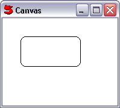

(left, top, right, bottom, width, height)
Uses the coordinates passed in to draw an round rectangle using RoundRect.
The width defaults to 1/3 of the smaller side, and the height defaults to the width.
For example:
c = CanvasControl().Ctrl c.AddItem(CanvasRoundRect(30, 30, 130, 80))
Will draw:
